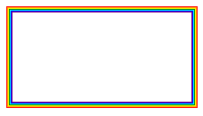

语法：
border-colors: 颜色值
div{
-moz-border-top-colors:颜色值;
-moz-border-right-colors:颜色值;
-moz-border-bottom-colors:颜色值;
-moz-border-left-colors:颜色值;
}
说明：
border-colors:实现多色边框，注意是border-colors，不是border-color
对于css3的border-colors属性，我们需要注意3点：
（1）border-colors属性并没有得到各大主流浏览器支持，目前仅有火狐浏览器支持
（2）不能使用-moz-border-colors属性为4条边同时设定颜色，必须像上面的语法那样分别为4条边设定颜色
（3）如果边框宽度（border-width）为n像素，则该边框可以使用n种颜色，每种颜色显示1像素的宽度
使用方法：
div{
-moz-border-top-colors:red orange yellow;
-moz-border-right-colors: red orange yellow;
-moz-border-bottom-colors: red orange yellow;
-moz-border-left-colors: red orange yellow;
}
兼容性：
目前只使用与高版本火狐浏览器
事例：
CSS3 border-colors实现多色边框
div{
width:200px;
height:100px;
border-width:7px;/*这里为7，说明下面有7种颜色值*/
border-style:solid;
-moz-border-top-colors:red orange yellow green cyan blue purple;
-moz-border-right-colors: red orange yellow green cyan blue purple;
-moz-border-bottom-colors: red orange yellow green cyan blue purple;
-moz-border-left-colors: red orange yellow green cyan blue purple;
}

CSS3 border-colors属性制作渐变边框
div{
width:200px;
height:100px;
border-width:8px;/*这里为8，说明下面有8种颜色值*/
border-style:solid;
-moz-border-top-colors:#D0EDFD #B8E4FD #9DD9FC #8DD4FC #71C9FC #4ABBFC #1DACFE #00A2FF;
-moz-border-right-colors:#D0EDFD #B8E4FD #9DD9FC #8DD4FC #71C9FC #4ABBFC #1DACFE #00A2FF;
-moz-border-bottom-colors:#D0EDFD #B8E4FD #9DD9FC #8DD4FC #71C9FC #4ABBFC #1DACFE #00A2FF;
-moz-border-left-colors:#D0EDFD #B8E4FD #9DD9FC #8DD4FC #71C9FC #4ABBFC #1DACFE #00A2FF;
}
由于border-colors属性兼容性不太好，仅有火狐浏览器支持，因此用的不多。
如果要实现多色边框可以用图片来实现，而渐变边框的话，我们可以使用css3种的box-shadow属性来实现。